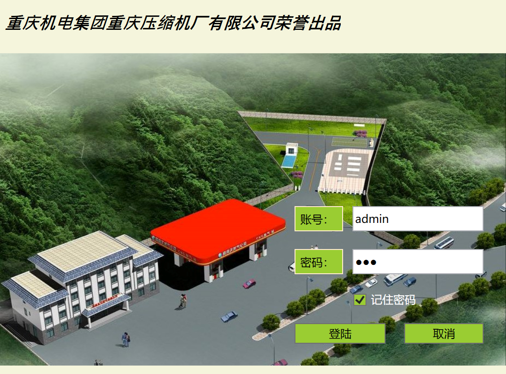
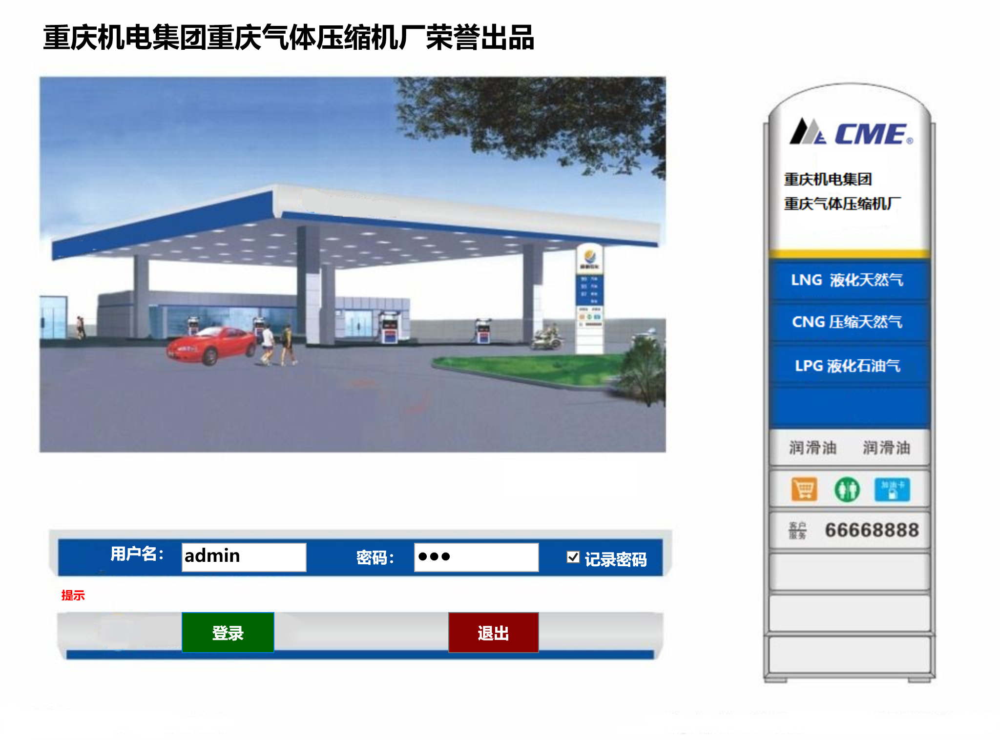

能源行业项目
技术栈 · 发展历程
加气站(加氢站)综合管理平台
项目概述
连接公司与线下各加气站(加氢站)，实现一卡通用、存值积分、优惠券、商品兑换等功能，同时通过实时数据监控方便财务结算与运营管理。支撑20+加氢站并发数据采集。
系统架构
表现层
WinForm主窗口、监控面板、加气记录Tab页、用户管理、系统设置、报表查询
组件层
自定义ButtonEx、MultiComboBox、TabItemClose控件库、LxtMonitor监控组件
业务层
TCP/COM通信协议插件框架、数据实体服务、业务逻辑处理
数据层
MySQL/MSSQL双数据库支持、数据工厂模式、统一访问接口
核心模块设计
| 模块 | 职责 | 核心功能 |
|---|---|---|
| Lxtassembly | WPF自定义控件库 | 扩展按钮、组合框、Tab控件等 |
| WpfMonitors | 监控组件库 | LxtMonitor、TCPMonitor、标准流量计监控 |
| IFuncPlugin | 通信协议插件 | TCP/COM协议实现、数据解析、日志记录 |
| DataHelper | 数据库访问层 | MySQL/MSSQL工厂模式、数据访问 |
| ICControler | IC卡设备控制 | IC卡读写、加密解密、设备通信 |
关键技术实现
监控面板布局机制
- Grid动态布局，每行最多6个监控控件
- 列宽使用Star单位按比例分配
- 支持串口/TCP双通信模式
通信协议架构
- AsyncTcpServer异步服务端
- 包头标识(0xCD/0xAB)解析
- 支持粘连数据包处理
核心业务流程
个人职责
系统界面展示




加气站(加氢站)自动化控制系统（项目经理）
项目背景：作为项目经理带领8人技术团队研发加气站(加氢站)自动化控制系统，实现设备智能化控制、安全监测和数据管理，满足加气站(加氢站)自动化运营需求。
项目管理职责：
1. 项目规划与团队管理：制定项目计划，组建技术团队，协调开发、测试和业务部门，确保项目按时交付；
2. 需求分析与系统设计：深入理解加气机/加氢机工作原理，设计系统架构，包括控制逻辑、安全监控、数据采集等模块；
3. 技术方案制定：选择C#/.NET和WPF作为主要开发技术，集成SCADA监控功能，实现设备状态实时监控；
4. 质量管控：建立测试流程，确保系统稳定性，组织安全评估和计量精度测试；
5. 证书获取：带领团队完成国家安全技术认证和计量器具型式批准，确保产品符合国家标准。
智慧加气站(加氢站)平台架构
项目背景：构建智慧加气站(加氢站)监控系统，实现设备状态实时监控、数据采集和运营管理。
技术职责：
1. SCADA开发：使用WPF开发SCADA监控界面，实现设备状态监控、报警系统、趋势分析；
2. 实时通信：开发高性能通信模块，实现实时数据采集和传输；
3. 数据可视化：开发数据可视化组件，支持多种图表和3D展示；
4. 系统集成：集成多种工业协议，实现异构系统的数据融合。
智慧加气站(加氢站)平台架构图

加气站(加氢站)SCADA监控系统
项目背景：实现加气站(加氢站)设备实时监控、数据采集、流程控制与远程管理，满足 LNG/LH2 设备防爆要求与国家计量器具生产标准。
核心职责：
1. 主导上位机软件全流程开发：基于 .NET Framework + WinForm 搭建 C/S 架构系统，设计 UI 界面与设备通信逻辑；
2. 通过 Modbus（RTU/TCP）、S7 协议对接 PLC 与工业设备，实现流量计、传感器数据采集与加气/加氢流程控制；
3. 独立封装设备通信接口，设计自定义用户控件，优化多设备并发通信性能；
4. 负责软件测试、BUG 修复与技术文档编写，支撑 20+ 加气站(加氢站)稳定运行。
系统运行演示
StationSCADAMonitoringSystem/scanda_station4.gif)
加气站(加氢站)出厂充装标定平台系统
项目背景：开发机械特装检测装备检验平台，涉及管线工艺、PLC、传感器、流量计、上位机检测软件等技术，满足加气机/加氢机出厂检验要求。
个人职责：
1. 主导上位机软件开发，基于 WinForm 实现标定流程 UI 界面与逻辑控制；
2. 通过 Modbus 协议对接 PLC 与传感器，实现数据自动采集与标定流程自动化；
3. 编写测试方案与技术文档，满足国家计量器具生产标准。